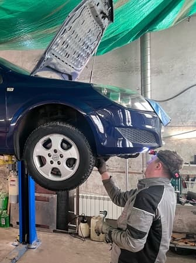
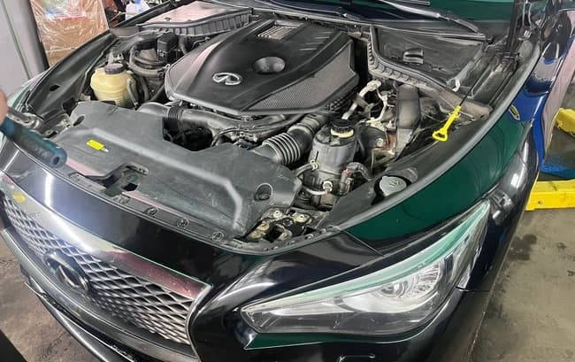

Ремонтвашего автомобиля

SuperGarageTeam — это не просто автосервис, а команда фанатов своего дела, которые искренне заботятся о вашем автомобиле. Мы не просто чиним машины — мы возвращаем уверенность за рулём. Используем современное оборудование и передовые технологии, чтобы вы были спокойны за безопасность и надёжность. В то же время мы уважаем проверенные временем традиции, ведь именно в балансе опыта и инноваций рождается настоящее качество. Наша цель — чтобы вы чувствовали себя уверенно на дороге, зная, что ваша машина в надёжных руках.
